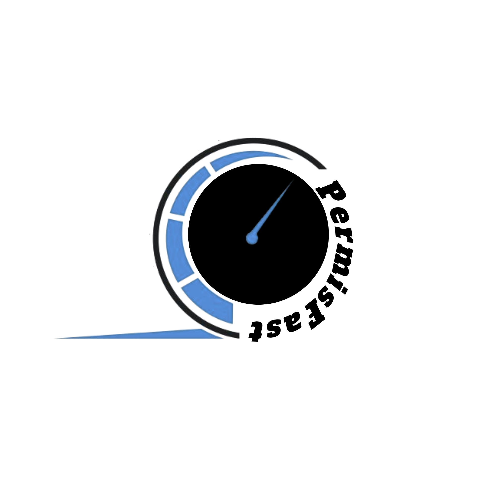

Une vision moderne pour accélérer l'acquisition et fédérer la Génération Z.
Une piste d'exploration créative intégrant la notion de vitesse (compteur) et des typographies ancrées dans l'univers de la mobilité moderne.

Dès mon arrivée, je mettrais en place ce hashtag fédérateur. L'humour est le levier de conversion le plus puissant sur TikTok pour la Gen Z. Dédramatiser l'examen par le rire permet de transformer une simple audience en une véritable communauté soudée.
Il faut que PermiFast soit la référence des jeunes, la première chose à laquelle ils pensent quand ils pensent au permis ! Et rien de mieux que l'humour pour conquérir leur cœur... Vous ne pensez pas ?